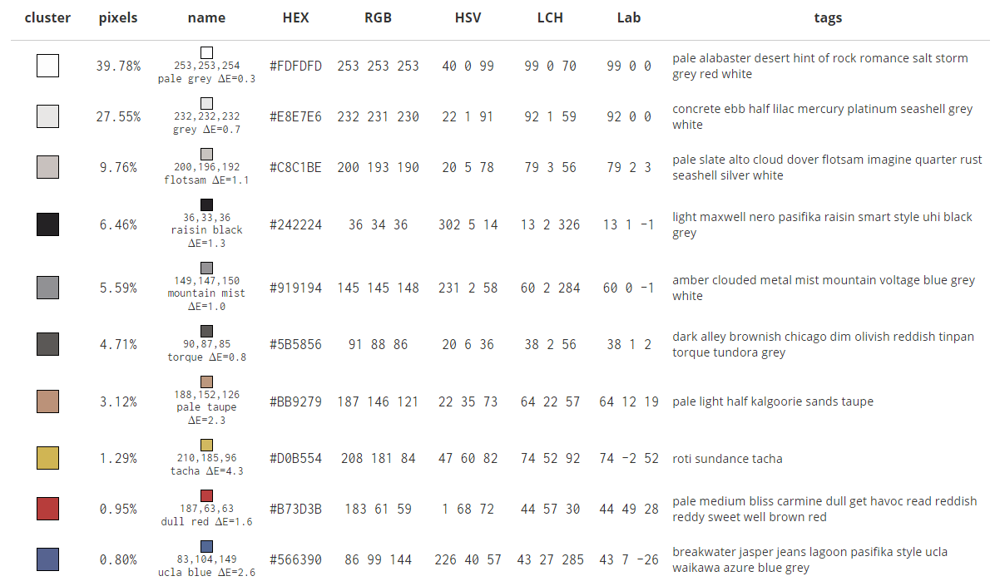
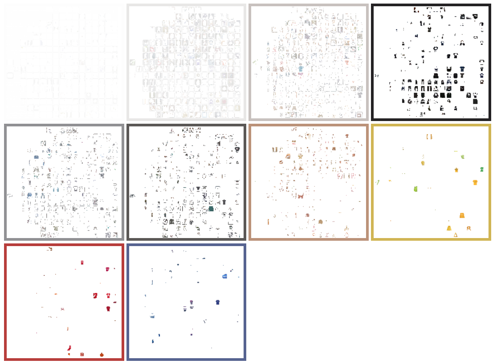

For Information Design Studio -course I am doing a project where I am trying to visualize data that deals with the issues of fast fashion on clothing. The reason why I am looking for the most popular images is because I want to figure out what does the majority of people like and what works. Since there aren't many clothes that have other information than text, I decided to focus on clothes that have information in the form of letters. I also excluded information such as brand, size, washing instructions, origin and fabric materials. My goal was initially to find answers to these questions:
At first I thought I might look into scraping the most popular images from Instagram and I found a tool that allows me to search for Instagram posts by using hashtags. A problem appeared that I couldn’t find the most popular images, since the tool only scrapes about 10 000 of the most recent posts with a tag. Because Instagram has so much images from different users, it is hard to find out what is popular right now. So I figured that maybe it isn’t possible to answer my research question with instagram. These are the two instagram APIs that I tried:
Digital Methods Instagram Scraper Apify Instagram ScraperI used the browser extension tool “DownThemAll” that allowed me to download all the images from a certain page. Because Pinterest usually shows the most popular images first I was able to download the most popular images of search tags. I scraped about 250 images and then embedded them into a grid on Orange experimenting with different embeddings. Some of the images didn't have anything to do with my topic so I had to delete them manually.
Inception v3: model trained on ImageNet. Google’s deep neural network for image recognition. It is trained on the ImageNet data set.
Painters: A model trained to predict painters from artwork images. This embedder was trained on 79,433 images of paintings by 1,584 painters
SqueezeNet: [Small and fast] model for image recognition trained on ImageNet.
I analyzed the Painters model and saw some patterns about how the images were sorted. Although the images I scraped were not paintings, Orange sorted them in a logical way. At first I thought that the images were only sorted by color, but looking closely I noticed some other patterns. On the left images had a darker background and on the right the background was completely white. The middle part of the grid had a lot of variety in colors and clothes. The top half of the grid had less models than on the bottom, in addition the images on the bottom were taken from a distance.

Then I also analyzed Inception v3 model and I noticed different patterns. This model categorized clothing based on what is in the image. I still don’t understand how it works since the description for Inception is really complicated and hard for me to understand at all. I did though find a guide that explains how it works.
 Link to A Simple Guide to the Versions of the Inception Network
Link to A Simple Guide to the Versions of the Inception Network
“Text T-shirt”, “clothing with text”, “clothes with text”, “clothing text print”, “printed clothing”, “printed hoodie”, “text printed on shirts”, “text printed on pants”, “text printed on jeans”, “text printed on jackets”, “text on knitted sweater”
Then I also wanted to analyze the images, but I had to do it manually by writing down how many characters an article of clothing has, what is the size, what type of font is it using, what are the main colors and where is the text mainly located. By doing this I wanted to see what is the trend. I know that there is a lot of data I could collect from this, but I thought that it would take way too much time, so I simplified the data. I also ended up collecting data from 130 images because I thought that it would be enough to see a pattern. I visualized the data using RAWgraphs, Excel and Illustrator.
Large letters on clothing are visible from afar, small is only visible near the clothing, medium is between large and small and extra small letters are as small as most body texts are.
I found an api that summarizes the colors in an image. I decided to use the image grid I made using Orange for that. I was aware that the image contained a lot of white space between the photos, in addition to the people wearing the clothing and the background would play a big part on the result. I was still only interested in the colors that appeared the most.
  Link to Image Color SummarizerIn the end I wished I had collected more data from the images since it would’ve been interesting to see other patterns, such as links to the websites where the images are originally from. That way I could’ve found for example the brand, country, prices and materials the clothes were made from. I was happy with the result though it didn’t contain much data and I found it useful for the Information Design Studio project because the data showed me something that I didn’t expect even though most of the results were obvious.
For the research question “What kind of clothing, that has information in it, is popular right now?” it would’ve been better to use other websites besides Pinterest. According to Omnicore’s “Pinterest by the Numbers: Stats, Demographics & Fun Facts” article, 71% of Pinterest users are Female and only 7% of pins are from male users. The median age of a Pinterest user is 40, however, the majority of active pinners are below 40. This is why the result of images are biased and only show what Pinterest users are interested in. To get a broader view I would have to analyse a lot of different websites.
Link to Pinterest by the Numbers: Stats, Demographics & Fun Facts